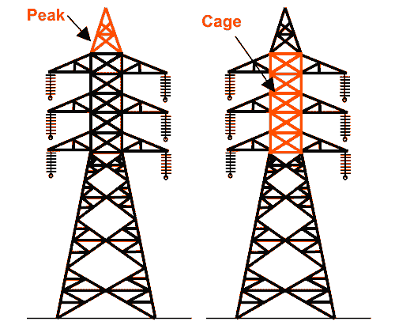
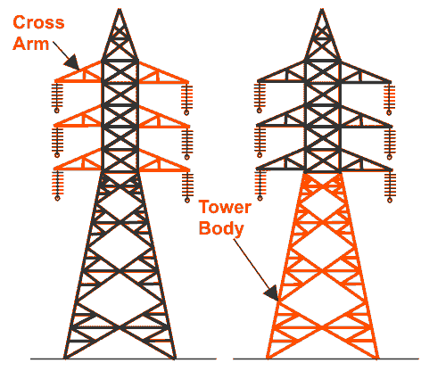
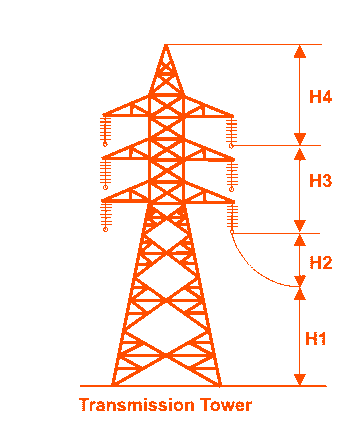
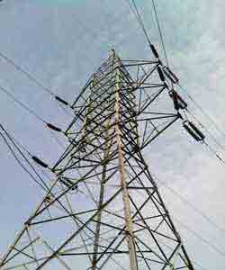

• Cross Arm
• Cage
Transmission Tower Body
Design of Transmission Tower
• Types
The main supporting unit of overhead transmission line is transmission tower. Transmission towers have to carry the heavy transmission conductor at a sufficient safe height from ground. In addition to that all towers have to sustain all kinds of natural calamities. So transmission tower designing is an important engineering job where all three basic engineering concepts, civil, mechanical and electrical engineering concepts are equally applicable.
A power transmission tower consists of the following parts,
1) Peak of transmission tower
2) Cross arm of transmission tower
3) Boom of transmission tower
4) Cage of transmission tower
5) Transmission Tower Body
6) Leg of transmission tower
7) Stub/Anchor Bolt and Base plate assembly of transmission tower.
The main parts among these are shown in the pictures.
Peak of Transmission Tower
The portion above the top cross arm is called peak of transmission tower. Generally earth shield wire connected to the tip of this peak.
Cross Arm of Transmission Tower
Cross arms of transmission tower hold the transmission conductor. The dimension of cross arm depends on the level of transmission voltage, configuration and minimum forming angle for stress distribution.
Cage of Transmission Tower
The portion between tower body and peak is known as cage of transmission tower. This portion of the tower holds the cross arms.
Transmission Tower Body


Design of Transmission Tower

During design of transmission tower the following points to be considered in mind,
a) The minimum ground clearance of the lowest conductor point above the ground level.
b) The length of the insulator string.
c) The minimum clearance to be maintained between conductors and between conductor and tower.
d) The location of ground wire with respect to outer most conductors.
e) The mid span clearance required from considerations of the dynamic behavior of conductor and lightening protection of the line.
To determine the actual transmission tower height by considering the above points, we have divided the total height of tower in four parts,
1. Minimum permissible ground clearance (H1)
2. Maximum sag of the conductor (H2)
3. Vertical spacing between top and bottom conductors (H3)
4. Vertical clearance between ground wire and top conductor (H4).
Types of Transmission Tower
According to different considerations, there are different types of transmission towers.
The transmission line goes as per available corridors. Due to unavailability of shortest distance straight corridor transmission line has to deviate from its straight way when obstruction comes. In total length of a long transmission line there may be several deviation points.
According to the angle of deviation there are four types of transmission tower-
1. A – type tower – angle of deviation 0o to 2o.
2. B – type tower – angle of deviation 2o to 15o.
3. C – type tower – angle of deviation 15o to 30o.
4. D – type tower – angle of deviation 30o to 60o.
As per the force applied by the conductor on the cross arms, the transmission towers can be categorized in another way-
1. Tangent suspension tower and it is generally A - type tower.
2. Angle tower or tension tower or sometime it is called section tower. All B, C and D types of transmission towers come under this category.
Apart from the above customized type of tower, the tower is designed to meet special usages listed below,

These are called special type tower
1. River crossing tower
2. Railway/ Highway crossing tower
3. Transposition tower
Based on numbers of circuits carried by a transmission tower, it can be classisfied as-
1. Single circuit tower
2. Double circuit tower
3. Multi circuit tower.
 by
by